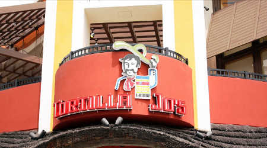

Disneyland Secrets


Downtown Disney has a variety of restaurants to choose from. If leaving the park and your stomach is hungry, stop by one of these restaurants. My husband and I's personal favorite restaurant is Earl of Sandwich. Their mac & cheese is to die for. Here is a list of my other favorite restaurants in the Downtown Disney District:
If you want to take a break from all of the magic of Disneyland and have that shopping itch, check out these stores in the Downtown Disney District: